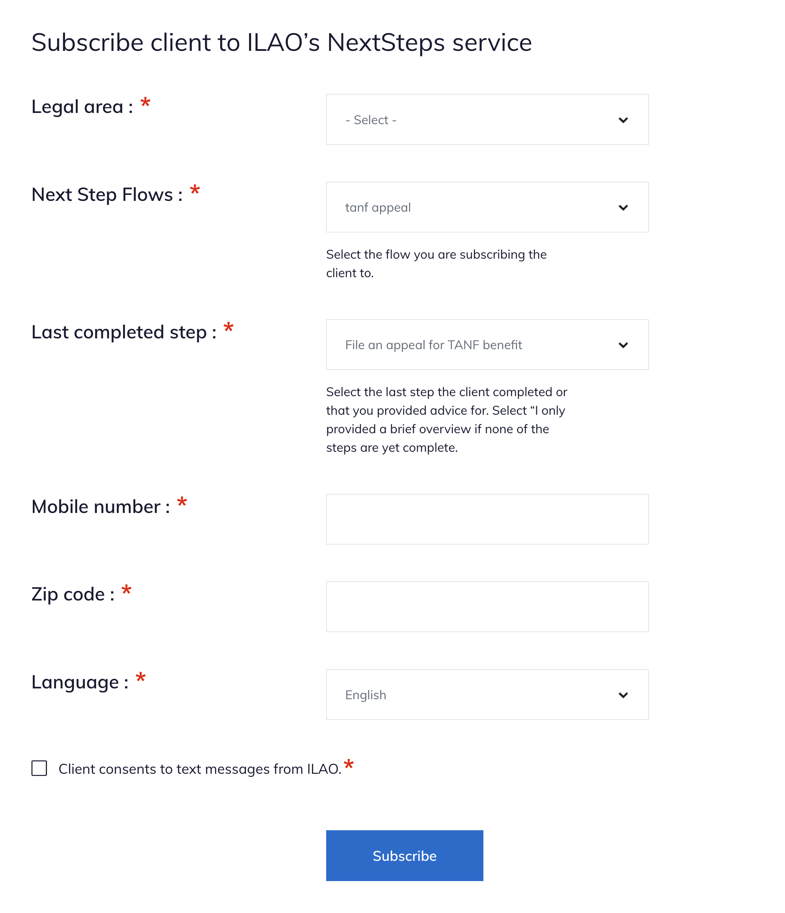

Legal Server Signup
The Legal Server implementation anticipates having 2 pieces:
An iFrame from our website to subscribe the user
An API post to update the subscribed users data
IFrame Form
ILAO will provide an iFrame url to partners for inclusion in their instance of LegalServer. The iframe code is listed on the edit organization form for the organization in the website.
The form includes:
List of LSC problem codes, to make it easier for caseworkers to filter
List of published NextStep Flows
List of available steps
A field to collect the client’s mobile-number
A field to collect tthe client’s zip code
Language preference of the client
Opt in field
Hidden organization ID as a query parameter
When submitted this will create a nextStepsUserEntity within ILAO’s website and store:
The client’s mobile number
The client’s zip code
The client’s language preference
The referring organization
The node ID of the Next Step Flow the user is subscribed to
The initial step the client was subscribed to.
The website will then send the initial message on the next scheduled task run.
API Post
ILAO will work with partners to implement an API block that will post back to ILAO. This API call will include these parameters from Legal Server:
The user’s mobile phone number
The uuid from legal server
The user’s zip code
Once posted, the website will:
Find the relevant NextStepUser entity
Update the NextStepsUser entity with the uuid based on the phone number where the uuid is empty
Query the otis_triage_user table to check for the uuid; if found will add the triage user id to the NextStepsUser entity
The purpose of this step is to track OTIS vs non-OTIS cases and make this information available in our OTIS dashboard.